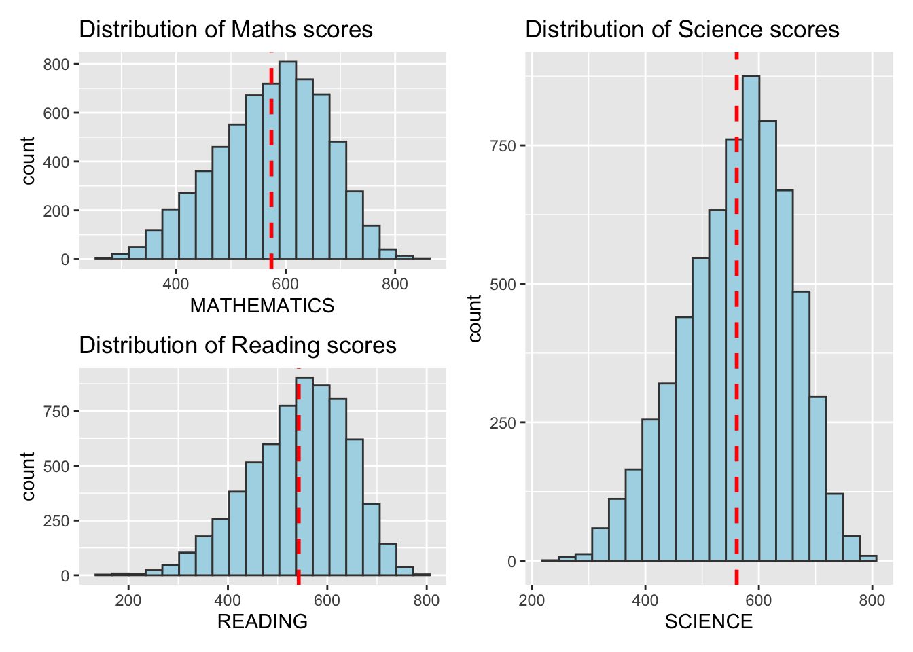
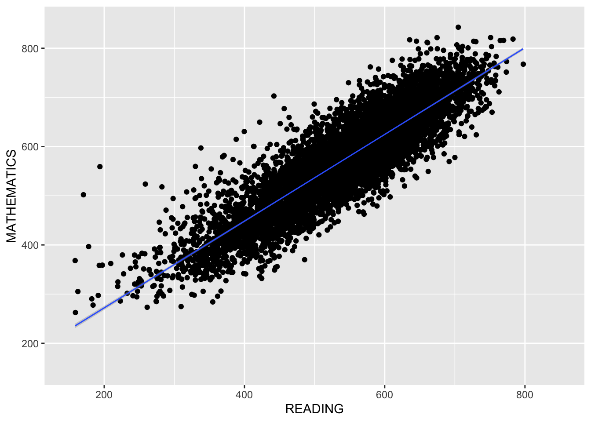
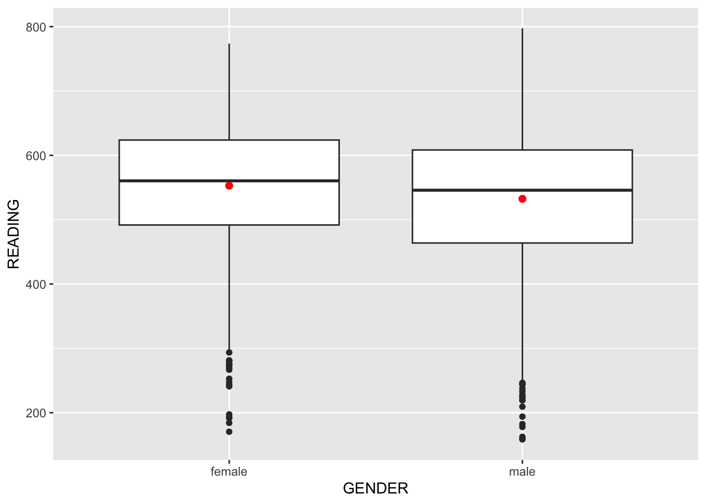
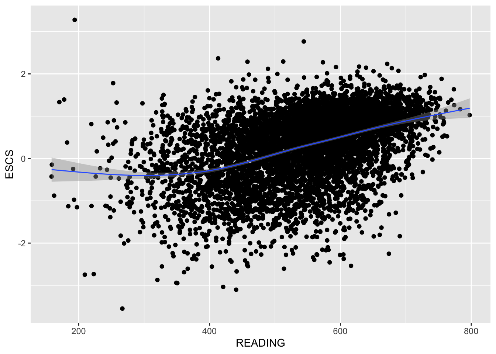
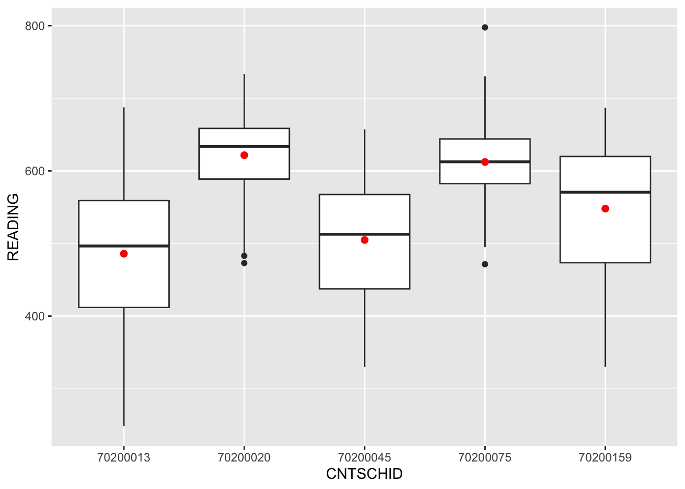

pacman::p_load(ggrepel, patchwork,
ggthemes, hrbrthemes, dplyr, ggdist, ggridges,
tidyverse, haven)Take-home Exercise 1
Navigating Educational Disparities: Examining Perceptions Despite Singapore’s Pursuit of Excellence
1. Overview
1.1 Setting the Scene
Andreas Schleicher, the education director of OECD, conveyed in a BBC article that Singapore has achieved excellence without significant disparities between children from affluent and underprivileged families (2016). Additionally, several Ministers for Education in Singapore have adopted the slogan “every school a good school.” Despite these efforts, the prevailing public opinion strongly suggests the presence of disparities, particularly between elite and neighbourhood schools, among students from families with varying socioeconomic statuses, and between immigration and non-immigration families.
1.2 Our Task
The data that we will be using would be the 2022 Programme for International Student Assessment (PISA), which evaluates education systems globally by testing 15-year-old students in mathematics, reading, and science.
By employing some EDA, we would want to find out:
The distribution of Singaporean students’ proficiency in mathematics, reading and science
The correlation between these performance levels and factors such as schools, gender and the socioeconomic status of the students
2. Data Preparation
2.1 Loading R packages
In this take-home exercise, tidyverse and haven packages will be used.
Also, we will be using these packages listed below:
ggrepel is an R package that offers geoms for ggplot2, enabling the repulsion of overlapping text labels
ggthemes is an R package that offers additional themes, geoms, and scales for ‘ggplot2’
hrbrthemes is an R package that offers typography-centric themes and theme components for ggplot2
patchwork is an R package designed for creating composite figures using ggplot2
dplyr is a data manipulation package in R that offers a consistent set of functions, or verbs, to address common data manipulation tasks. It includes functions such as ‘mutate()’ for creating new variables, ‘select()’ for choosing variables by name, ‘filter()’ for selecting cases based on values, ‘summarise()’ for reducing multiple values to a single summary, and ‘arrange()’ for changing the row ordering in a dataset.
note: The tidyverse package is an “umbrella-package” that installs tidyr, dplyr and several other useful packages for data analysis, such as ggplot2, tibble, etc.
The code chunk used is as follows:
2.2 Importing the dataset
One dataset from PISA is provided for this task, specifically the Student questionnaire data file: cy08msp_stu_qqq.sas7bdat
The code chunk below uses read_sas() of haven to import PISA data into R environment.
stu_qqq <- read_sas("data/cy08msp_stu_qqq.sas7bdat")2.3 Filtering data from Singapore only
Since our task is to find out students’ performance in various subjects and relationship of performances with regards to other variables in Singapore, we would need to filter data to only include Singapore. Since there is a CNT column, which is a Country column, we will filter it to only include SGP (Singapore).
The code chunk to filter SGP only:
stu_qqq_SG <- stu_qqq %>%
filter(CNT == "SGP")Since the original data is huge in file size, we will save the Singapore filtered data as stu_qqq_SG in the data folder.
The code chunk to save filtered data as stu_qqq_SG:
write_rds(stu_qqq_SG,
"data/stu_qqq_SG.rds")Therefore, we will only read the stu_qqq_SG.rds file from now onwards.
The code chunk to read stu_qqq_SG.rds file:
stu_qqq_SG <- read_rds("data/stu_qqq_SG.rds")2.4 Summary Statistics of stu_qqq_SG data
To check if we have filtered the correct data to include SG only, we will be displaying first 10 rows using head():
# A tibble: 10 × 1,279
CNT CNTRYID CNTSCHID CNTSTUID CYC NatCen STRATUM SUBNATIO REGION OECD
<chr> <dbl> <dbl> <dbl> <chr> <chr> <chr> <chr> <dbl> <dbl>
1 SGP 702 70200052 70200001 08MS 070200 SGP01 7020000 70200 0
2 SGP 702 70200134 70200002 08MS 070200 SGP01 7020000 70200 0
3 SGP 702 70200112 70200003 08MS 070200 SGP01 7020000 70200 0
4 SGP 702 70200004 70200004 08MS 070200 SGP01 7020000 70200 0
5 SGP 702 70200152 70200005 08MS 070200 SGP01 7020000 70200 0
6 SGP 702 70200043 70200006 08MS 070200 SGP01 7020000 70200 0
7 SGP 702 70200049 70200007 08MS 070200 SGP01 7020000 70200 0
8 SGP 702 70200107 70200008 08MS 070200 SGP01 7020000 70200 0
9 SGP 702 70200012 70200009 08MS 070200 SGP01 7020000 70200 0
10 SGP 702 70200061 70200010 08MS 070200 SGP01 7020000 70200 0
# ℹ 1,269 more variables: ADMINMODE <dbl>, LANGTEST_QQQ <dbl>,
# LANGTEST_COG <dbl>, LANGTEST_PAQ <dbl>, Option_CT <dbl>, Option_FL <dbl>,
# Option_ICTQ <dbl>, Option_WBQ <dbl>, Option_PQ <dbl>, Option_TQ <dbl>,
# Option_UH <dbl>, BOOKID <dbl>, ST001D01T <dbl>, ST003D02T <dbl>,
# ST003D03T <dbl>, ST004D01T <dbl>, ST250Q01JA <dbl>, ST250Q02JA <dbl>,
# ST250Q03JA <dbl>, ST250Q04JA <dbl>, ST250Q05JA <dbl>, ST250D06JA <chr>,
# ST250D07JA <chr>, ST251Q01JA <dbl>, ST251Q02JA <dbl>, ST251Q03JA <dbl>, …head(stu_qqq_SG,10) 2.5 Preparing Subjects Data
In order to assess students’ performance in various subjects, including Mathematics, Reading and Science, we must identify the columns that correspond to these specific subjects.
With reference to PISA website, we can utilise plausible estimates for assessing student proficiency. PISA evaluates student achievement using plausible values (PVs), derived from Item Response Theory models (refer to Chapter 5 of the PISA Data Analysis Manual: SAS or SPSS, Second Edition, or the accompanying guide “Scaling of Cognitive Data and Use of Students Performance Estimates” for detailed information). These models fundamentally deduce a student’s ability from their test performance. In application, plausible values are produced through multiple imputations, considering pupils’ responses to the randomly assigned subset of test questions and their input in background questionnaires.
2.5.1 Preparing Maths Data
After looking through the dataset, we have determined that the columns denoting Mathematics performance are PV1MATH to PV10MATH.
Consequently, we will compute the average of these plausible values using the rowMeans() function. A new column, called MATHEMATICS, will be generated to store the calculated average plausible values for the Mathematics subject.
The corresponding code snippet is as follows:
# Select the columns containing math plausible values
math_columns <- stu_qqq_SG[, c("PV1MATH", "PV2MATH", "PV3MATH", "PV4MATH", "PV5MATH", "PV6MATH", "PV7MATH", "PV8MATH", "PV9MATH", "PV10MATH")]
# Calculate the row-wise mean
math_row_means <- rowMeans(math_columns)
# Add the row means as a new column to the data frame
stu_qqq_SG$MATHEMATICS <- math_row_means2.5.2 Preparing Reading Data
Similarly, upon close examination of the dataset, we have identified that the columns associated with Reading are PV1READ to PV10READ.
As a result, we will calculate the average of these plausible values using the rowMeans() function. A new column, labeled READING, will be created to store the resulting average plausible values for the Reading subject.
The corresponding code snippet is provided below:
# Select the columns containing read plausible values
reading_columns <- stu_qqq_SG[, c("PV1READ", "PV2READ", "PV3READ", "PV4READ", "PV5READ", "PV6READ", "PV7READ", "PV8READ", "PV9READ", "PV10READ")]
# Calculate the row-wise mean
reading_row_means <- rowMeans(reading_columns)
# Add the row means as a new column to the data frame
stu_qqq_SG$READING <- reading_row_means2.5.3 Preparing Science Data
Lastly, upon a thorough review of the dataset, we have determined that the columns corresponding to Science are PV1SCIE to PV10SCIE.
Consequently, we will use the rowMeans() function to compute the average of these plausible values. A new column, named SCIENCE, will be established to store the resulting average plausible values for the Science subject.
The corresponding code snippet is provided below:
# Select the columns containing science plausible values
science_columns <- stu_qqq_SG[, c("PV1SCIE", "PV2SCIE", "PV3SCIE", "PV4SCIE", "PV5SCIE", "PV6SCIE", "PV7SCIE", "PV8SCIE", "PV9SCIE", "PV10SCIE")]
# Calculate the row-wise mean
science_row_means <- rowMeans(science_columns)
# Add the row means as a new column to the data frame
stu_qqq_SG$SCIENCE <- science_row_means2.6 Preparing Gender Data
Upon examining the dataset, a particular column labeled ‘ST004D01T’ provides information about gender, using the values 1 and 2. According to the PISA questionnaire manual, 1 corresponds to female, while 2 corresponds to male.
To facilitate a more straightforward analysis, we intend to recode the values, assigning 1 to represent female and 2 to represent male. This recoding process will be carried out using the dplyr, a component of the tidyverse package.
We prefer generating a new column instead of altering the current one. To achieve this, employ the mutate function in conjunction with the assignment operator (=) to establish a fresh column.
This action will introduce a column named ‘GENDER’ into your ‘stu_qqq_SG’ dataset, with values redefined according to the ‘ST004D01T’ column. The original ‘ST004D01T’ column retains its original state, and now, a newly created ‘GENDER’ column contains the recoded values.”
The following code snippet provides the pertinent information:
# Install and load the dplyr package if we have not done so
# install.packages("dplyr")
library(dplyr)
# Create a new column 'GENDER' with recoded values
stu_qqq_SG <- stu_qqq_SG %>%
mutate(GENDER = recode(ST004D01T, "1" = "female", "2" = "male"))To check if we have recoded the gender data correctly, we will be displaying the first 10 rows of the GENDER column:
# A tibble: 10 × 1
GENDER
<chr>
1 female
2 male
3 male
4 male
5 female
6 female
7 male
8 male
9 female
10 male head(stu_qqq_SG[c("GENDER")],10)2.7 Preparing Socioeconomic Status Data
With reference to the PISA 2022 Technical Report, Figure 5.1 in the PISA 2022 Technical Report illustrates the two-dimensional framework taxonomy. The primary dimension categorises proposed constructs into two overarching categories defined by the PISA Governing Board (PGB): domain-specific constructs and general constructs, with the latter encompassing Economic, Social and Cultural Status (ESCS). The secondary dimension further categorises proposed constructs into five categories based on key areas of educational policy setting at different levels of aggregation. These categories include Student Background, Student Beliefs, Attitudes, Feelings. and Behaviours, Teaching Practices and Learning Opportunities, School Practices, Policies, and Infrastructure, and Governance, System-Level Policies, and Practices.
Therefore, it can be inferred that the ‘ESCS’ column can be utilised for assessing the socioeconomic status of students.
If we view the ‘ESCS’ column, there are negative and positive ESCS values, it generally implies a relative positioning of students along a spectrum of economic, social and cultural advantages or disadvantages.
Positive ESCS value: This typically indicates a higher socioeconomic status, suggesting that the student comes from an environment with more favourable economic conditions, higher social standing, and a richer cultural background. Students with positive ESCS values may have access to more resources, educational support and opportunities.
Negative ESCS value: Conversely, a negative ESCS value suggests a lower socioeconomic status. Students with negative ESCS values may face economic challenges, have a lower social standing, and possibly experience a less enriched cultural environment. These students may encounter additional obstacles in their educational journey due to a lack of resources or support.
The first 10 rows of the ESCS column can be seen here:
# A tibble: 10 × 1
ESCS
<dbl>
1 0.184
2 0.826
3 -1.04
4 -0.961
5 0.0856
6 0.127
7 -0.0154
8 1.16
9 1.47
10 0.520 head(stu_qqq_SG[c("ESCS")],10)2.8 Preparing School Data
Exploring the dataset reveals a sole column dedicated to schools, labeled ‘CNTSCHID.’ Regrettably, the dataset lacks details about the nature of CNTSCHID or the specific identity associated with each school ID. Nonetheless, we must work with the available information as is.
The first 10 rows of the CNTSCHID column can be seen here:
# A tibble: 10 × 1
CNTSCHID
<dbl>
1 70200052
2 70200134
3 70200112
4 70200004
5 70200152
6 70200043
7 70200049
8 70200107
9 70200012
10 70200061head(stu_qqq_SG[c("CNTSCHID")],10)3. Exploratory Data Analysis (EDA)
3.1 Three Subjects - Mathematics, Reading and Science
3.1.1 Distribution Across Three Subjects - Mathematics, Reading and Science
We will now do the plot for each respective subject. We will be doing a histogram to show the distribution across three subjects.
The code will be shown below:
p1 <- ggplot(data=stu_qqq_SG,
aes(x = MATHEMATICS)) +
geom_histogram(bins=20,
boundary = 100,
color="grey25",
fill="light blue") +
theme_gray() +
ggtitle("Distribution of Maths scores") +
geom_vline(xintercept = mean(stu_qqq_SG$MATHEMATICS),
color = "red",
linetype = "dashed",
size = 1)p2 <- ggplot(data=stu_qqq_SG,
aes(x = READING)) +
geom_histogram(bins=20,
boundary = 100,
color="grey25",
fill="light blue") +
theme_gray() +
ggtitle("Distribution of Reading scores") +
geom_vline(xintercept = mean(stu_qqq_SG$READING),
color = "red",
linetype = "dashed",
size = 1)p3 <- ggplot(data=stu_qqq_SG,
aes(x = SCIENCE)) +
geom_histogram(bins=20,
boundary = 100,
color="grey25",
fill="light blue") +
theme_gray() +
ggtitle("Distribution of Science scores") +
geom_vline(xintercept = mean(stu_qqq_SG$SCIENCE),
color = "red",
linetype = "dashed",
size = 1) The figure in the tabset below displays a composite of three histograms, seamlessly created using patchwork. This is specifically designed for merging separate ggplot2 graphs into a unified figure. The red dotted line indicates the mean.

(p1 / p2) | p3The histogram presented above offers a visual representation of the distribution of scores across three academic subjects: MATHEMATICS, READING and SCIENCE. The distribution pattern observed for each subject strongly aligns with the characteristics of a normal distribution.
A normal distribution is characterised by a symmetrical bell-shaped curve, with the majority of data points clustering around the mean and gradually tapering off towards the extremes. In the context of academic performance, this implies that a significant proportion of students scored close to the average, while fewer students achieved scores either significantly above or below the mean. In the case of academic assessments, a normal distribution suggests that the difficulty level of the questions was appropriately balanced, allowing for a diverse range of scores among the students.
3.1.2 Reading vs Mathematics

ggplot(data=stu_qqq_SG,
aes(x= READING,
y=MATHEMATICS)) +
geom_point() +
geom_smooth(method=lm,
size=0.5) +
coord_cartesian(xlim=c(150,850),
ylim=c(150,850))The scatterplot depicted above illustrates a positive correlation between reading and mathematics values. As the reading values increase, so do the corresponding mathematics values. This relationship is further emphasised by the upward trend observed in the best fit line. The consistent increase in one variable is mirrored by a proportional increase in the other. In light of these findings, it can be confidently asserted that a positive connection exists, suggesting that engaging in reading contributes to enhanced performance in mathematics among students.
3.2 “Reading” as our main focus
With reference to this research paper titled ‘Reading matters more than mathematics in science learning: an analysis of the relationship between student achievement in reading, mathematics, and science’ by Yuanze Zhu, the results revealed that proficiency in reading and mathematics strongly correlated with science achievement, with reading exerting a more substantial influence than mathematics. Consequently, we assert that prioritising reading over mathematics is essential for enhanced performance in science learning.
Henceforth, our focus will be exclusively on reading, considering it as the primary driver for improved achievement in other subjects, including Mathematics and Science.
3.2.1 Reading vs Gender

ggplot(data=stu_qqq_SG,
aes(y = READING, x= GENDER)) +
geom_boxplot() +
geom_point(stat="summary",
fun.y="mean",
colour ="red",
size=2) When it comes to the Reading, females exhibit a higher average performance compared to their male counterparts. The visual representation underscores a clear distinction, suggesting that, on average, females outperform males in the domain of Reading. One plausible interpretation for this observed trend could be rooted in the varying learning styles or preferences between genders. Research has suggested that females may, on average, possess certain cognitive strengths or approaches that align more closely with the skills demanded in Reading tasks. Additionally, sociocultural factors and educational environments may play a role in shaping differential outcomes, influencing how males and females engage with and excel in Reading-related activities.
3.2.2 Reading vs Socioeconomic Status (ESCS)

ggplot(data=stu_qqq_SG,
aes(x= READING, y=ESCS)) +
geom_point() +
geom_smooth(size=0.5)Examining the scatterplot above, it becomes evident that within the reading value range of 200-400, there is minimal correlation with ESCS. During this range, ESCS values exhibit considerable variability, ranging from -3 to 3. However, as reading values surpass 400, ESCS values predominantly hover around 0 and above, indicating a positive relationship. In other words, higher reading values correspond to higher ESCS values. This positive association is further emphasised by the upward trend observed in the best-fit line.
3.2.3 Reading vs School ID
Given the extensive size of the dataset, our strategy is to concentrate on the top 5 schools that exhibit the highest frequency. Achieving this involves tallying the occurrences of School IDs in the CNTSCHID column.
To obtain the counts of each unique CNTSCHID value in descending order, we can use the table() function along with sorting functions.
# Our dataframe is named stu_qqq_SG and the column is CNTSCHID
schid_counts <- table(stu_qqq_SG$CNTSCHID)
# Convert the result to a data frame and sort in descending order
schid_counts_df <- as.data.frame(schid_counts)
schid_counts_df <- schid_counts_df[order(-schid_counts_df$Freq), ]
# Print or use the schid_counts_df as needed
print(schid_counts_df) Var1 Freq
20 70200020 60
75 70200075 60
158 70200159 59
13 70200013 58
45 70200045 58
66 70200066 58
141 70200141 58
12 70200012 57
40 70200040 57
62 70200062 57
105 70200105 57
110 70200110 57
118 70200118 57
132 70200132 57
4 70200004 56
11 70200011 56
26 70200026 56
31 70200031 56
35 70200035 56
49 70200049 56
67 70200067 56
71 70200071 56
82 70200082 56
94 70200094 56
130 70200130 56
1 70200001 55
44 70200044 55
52 70200052 55
111 70200111 55
142 70200142 55
145 70200145 55
154 70200155 55
27 70200027 54
43 70200043 54
119 70200119 54
139 70200139 54
18 70200018 52
114 70200114 51
38 70200038 40
90 70200090 40
112 70200112 40
128 70200128 40
150 70200151 40
161 70200162 40
17 70200017 39
19 70200019 39
29 70200029 39
53 70200053 39
59 70200059 39
61 70200061 39
63 70200063 39
65 70200065 39
68 70200068 39
84 70200084 39
104 70200104 39
106 70200106 39
131 70200131 39
137 70200137 39
164 70200165 39
2 70200002 38
5 70200005 38
7 70200007 38
8 70200008 38
25 70200025 38
36 70200036 38
64 70200064 38
73 70200073 38
92 70200092 38
93 70200093 38
116 70200116 38
126 70200126 38
134 70200134 38
140 70200140 38
146 70200146 38
151 70200152 38
16 70200016 37
21 70200021 37
22 70200022 37
32 70200032 37
39 70200039 37
42 70200042 37
46 70200046 37
47 70200047 37
74 70200074 37
76 70200076 37
80 70200080 37
85 70200085 37
86 70200086 37
87 70200087 37
108 70200108 37
117 70200117 37
120 70200120 37
121 70200121 37
127 70200127 37
135 70200135 37
136 70200136 37
144 70200144 37
152 70200153 37
155 70200156 37
162 70200163 37
163 70200164 37
3 70200003 36
6 70200006 36
9 70200009 36
10 70200010 36
14 70200014 36
24 70200024 36
34 70200034 36
37 70200037 36
48 70200048 36
51 70200051 36
54 70200054 36
58 70200058 36
70 70200070 36
81 70200081 36
83 70200083 36
88 70200088 36
89 70200089 36
96 70200096 36
99 70200099 36
102 70200102 36
103 70200103 36
109 70200109 36
122 70200122 36
125 70200125 36
129 70200129 36
143 70200143 36
159 70200160 36
160 70200161 36
23 70200023 35
55 70200055 35
77 70200077 35
91 70200091 35
97 70200097 35
101 70200101 35
107 70200107 35
133 70200133 35
153 70200154 35
15 70200015 34
72 70200072 34
98 70200098 34
100 70200100 34
113 70200113 34
156 70200157 34
33 70200033 33
56 70200056 33
69 70200069 33
115 70200115 33
123 70200123 32
124 70200124 32
79 70200079 31
148 70200148 31
30 70200030 30
50 70200050 30
147 70200147 30
60 70200060 29
157 70200158 29
57 70200057 28
95 70200095 28
149 70200149 28
28 70200028 22
78 70200078 22
138 70200138 15
41 70200041 5From the output, we can see that the top 5 School IDs are:
70200020
70200075
70200159
70200013
70200045
Therefore, we will only focus on the above mentioned School IDs for our analysis.

# Filter the data for specific values of CNTSCHID
filtered_data <- stu_qqq_SG %>%
filter(CNTSCHID %in% c(70200020, 70200075, 70200159, 70200013, 70200045))
# Convert CNTSCHID to factor
filtered_data$CNTSCHID <- as.factor(filtered_data$CNTSCHID)
# Create the plot with the filtered data
ggplot(data = filtered_data,
aes(y = READING, x = CNTSCHID)) +
geom_boxplot() +
geom_point(stat = "summary",
fun.y = "mean",
colour = "red",
size = 2)Upon a detailed analysis of the boxplot, which visually encapsulates the distribution of Reading plausible values across multiple schools (identified by CNTSCHID), a distinct trend emerges. Notably, CNTSCHID 70200020, representing a specific school within the dataset, stands out with the highest mean Reading score, hovering around an impressive ~630. This observation sheds light on the academic performance of this particular school, suggesting a noteworthy level of achievement in Reading compared to the other four schools. The boxplot serves as a valuable tool in visually conveying these distributional nuances, highlighting the academic prowess of CNTSCHID 70200020 within the context of Reading achievement among the schools.